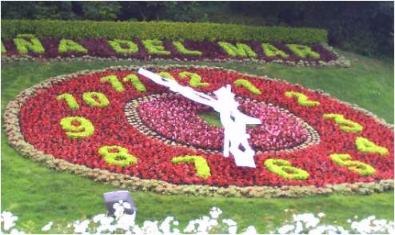
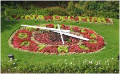
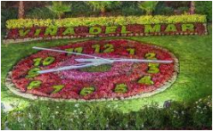
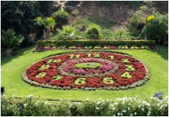
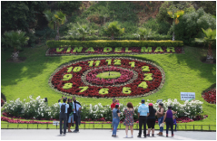

Reloj de Flores
Descripción

Es el reloj jardineado en funcionamiento más reconocido de la ciudad, y uno de los lugares con más fines turísticos.
El reloj, cuyo mecanismo fue construido en la fábrica Favag de la ciudad de Neuchâtel, Suiza, fue adquirido por la ciudad en el año 1962, como parte del plan de embellecerla con motivo del nombramiento de Viña del Mar como una de las sedes de la Copa Mundial de fútbol de ese año.
Para el 5 de septiembre de 2013 el reloj de flores, después de que su mecanismo fuera dañado por vandalismo, fue sustituido por una nueva maquinaria controlada por GPS, esto con la finalidad de buscar que al recibir algún daño se pueda ajustar automáticamente y sea menos vulnerable. El mecanismo fue fabricado por la empresa Relojes Olvera III Generación de Zacatlán, Puebla, México y el técnico Esteban Becerra y Martin Guerrero fueron los encargados de su instalación que incluye también programación de sonería digital que incluye campanadas y melodías que cambiarán según las estaciones del año y los días importantes a celebrar.
Fotos del Reloj de Flores






Te puede interesar:
Descripción
Es el reloj jardineado en funcionamiento más reconocido de la ciudad, y uno de los lugares con más fines turísticos.
El reloj, cuyo mecanismo fue construido en la fábrica Favag de la ciudad de Neuchâtel, Suiza, fue adquirido por la ciudad en el año 1962, como parte del plan de embellecerla con motivo del nombramiento de Viña del Mar como una de las sedes de la Copa Mundial de fútbol de ese año.
Para el 5 de septiembre de 2013 el reloj de flores, después de que su mecanismo fuera dañado por vandalismo, fue sustituido por una nueva maquinaria controlada por GPS, esto con la finalidad de buscar que al recibir algún daño se pueda ajustar automáticamente y sea menos vulnerable. El mecanismo fue fabricado por la empresa Relojes Olvera III Generación de Zacatlán, Puebla, México y el técnico Esteban Becerra y Martin Guerrero fueron los encargados de su instalación que incluye también programación de sonería digital que incluye campanadas y melodías que cambiarán según las estaciones del año y los días importantes a celebrar.
Fotos del Reloj de Flores